Mechanical characterization
Facility: Science and Research Engineering Facility
LUNA Continuous Strain Sensing
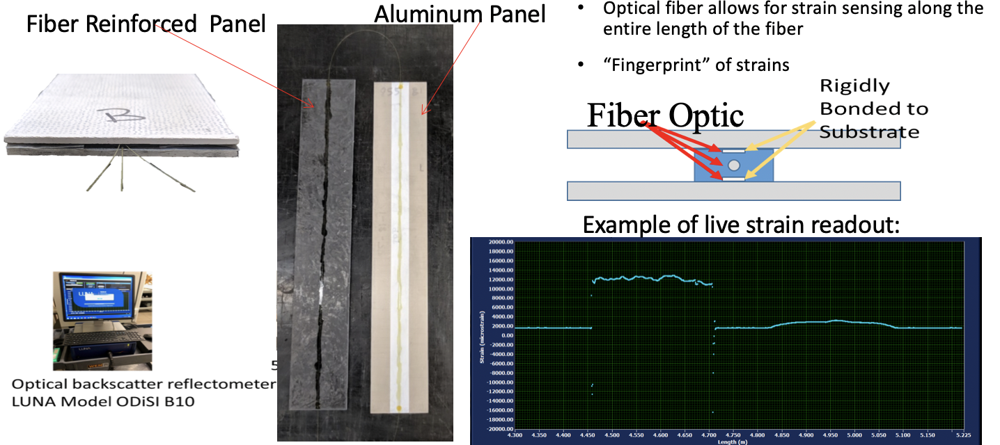Thermal Digital Image Correlation (TDIC)

Thermal Digital Image Correlation (TDIC) continued
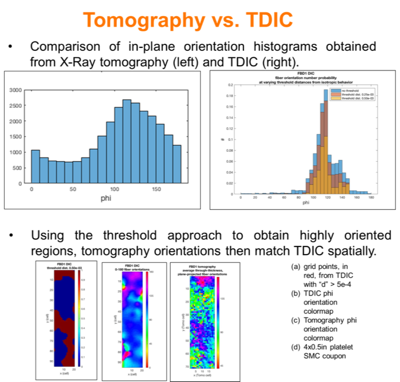Tensile Testing coupled with Digital Image Correlation (DIC) for a +/-45 degree fiber orientation composite sample
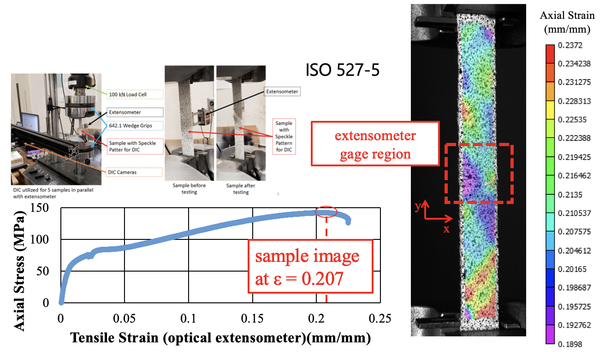Compression testing coupled with Digital Image Correlation (DIC)
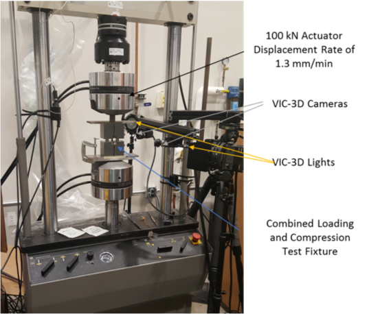 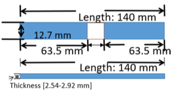Special Dimensions
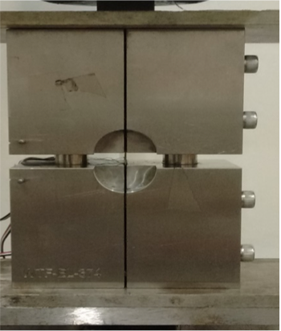 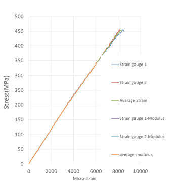 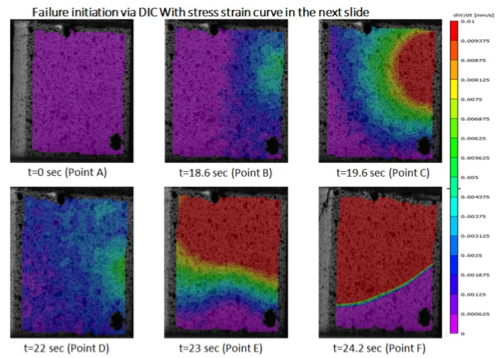Digital Image Correlation (DIC) Strain Evolution
Flexural Mechanical Testing Setup
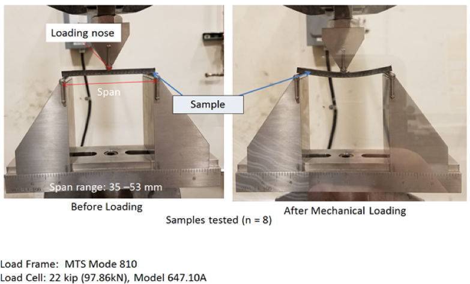ASTM D790
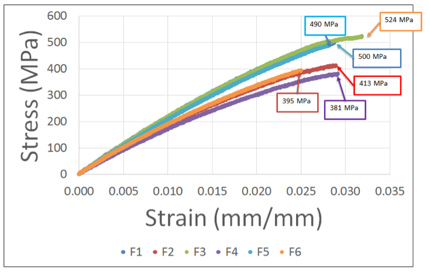 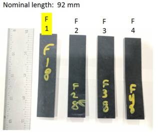Thickness: 4.81 mm
In Plane Shear Iosipescu test method coupled with digital image correlation (DIC)
0-45-90 Rosette strain gage mounted on one side and digital image correlation speckle pattern on other side
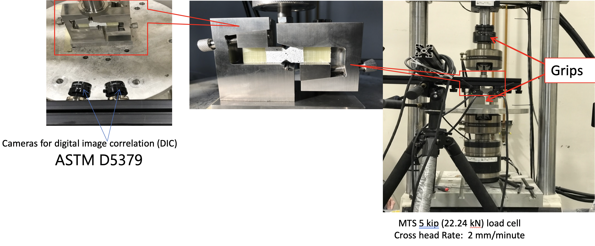 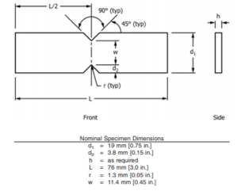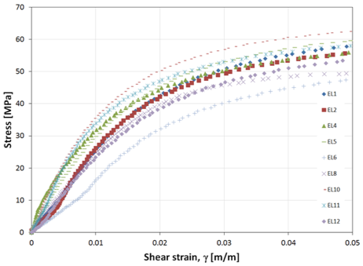Lap Shear Mechanical Testing using LUNA Optical Distributed Sensor Interrogator coupled with Digital Image Correlation (DIC)
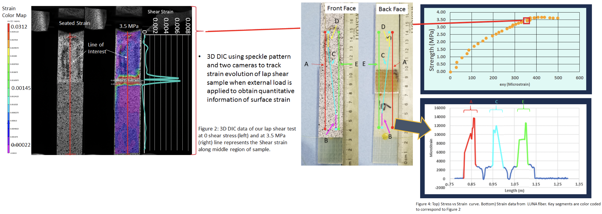 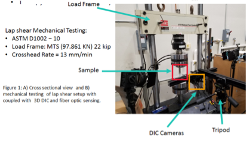ASTM D5868
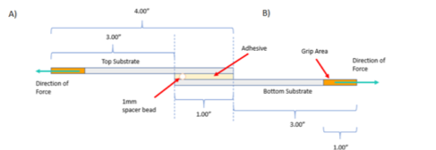Sample Dimensions
Interlaminar Shear Strength (ILSS) Mechanical Testing Setup
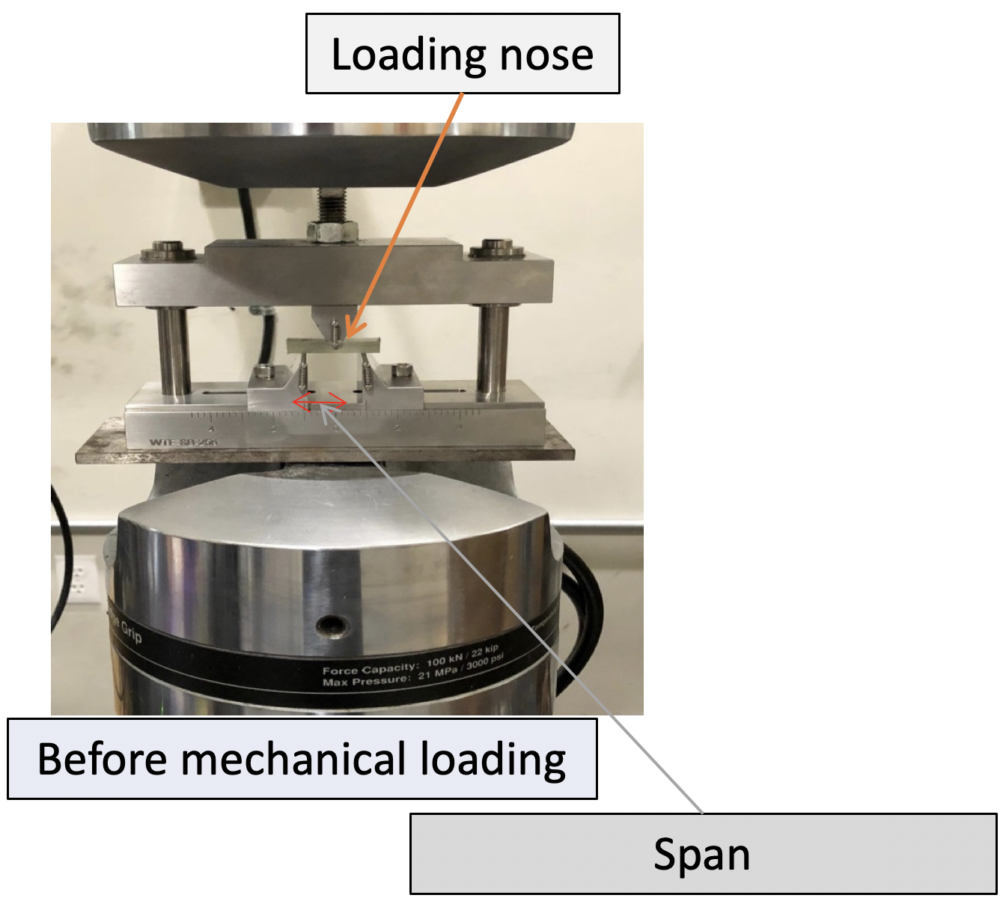ASTM D2344
MTS 88.96 kN (20 kip)
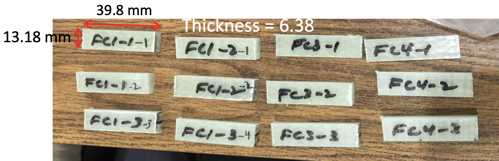ILSS samples
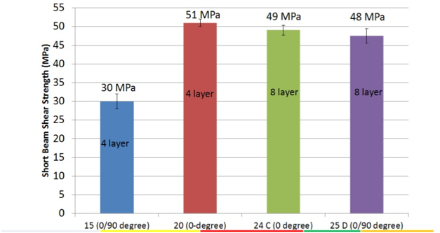Tensile Testing coupled with Digital Image Correlation (DIC) for a +/-45 degree fiber orientation composite sample
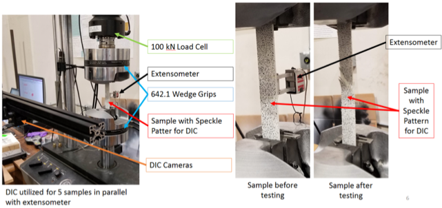ISO 527-5
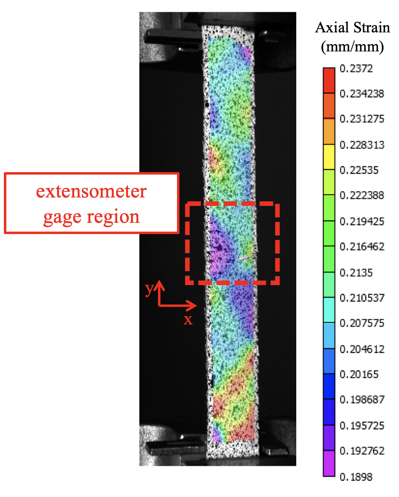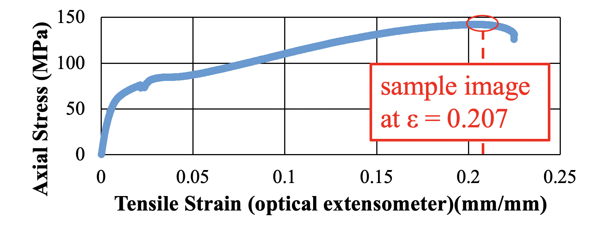